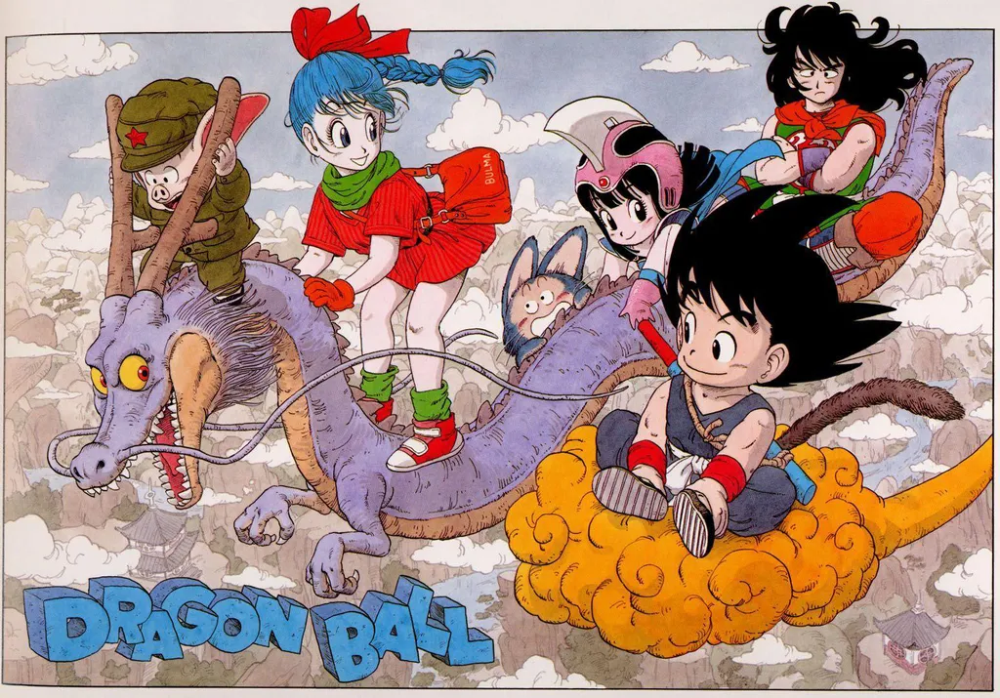

Resumo sobre Mangá
- Mangá é o nome dado a histórias em quadrinhos japonesas.
- Os mangás possuem características marcantes nos seus desenhos, como olhos acentuados e expressivos.
- Existem vários tipos e gêneros de mangás.
- Há uma forma específica para ler mangá, que deve obedecer o sentido da direita para a esquerda.
Origem do Mangá
A origem do mangá remonta ao período feudal no Japão, mais precisamente a época do Oricom Shohatsu (Teatro das Sombras), no século XVII. Os artistas percorriam vilarejos contando lendas por meio das sombras de marionetes projetadas em uma espécie de painel. Essas lendas acabaram sendo escritas e ilustradas em rolos de papel, dando origem às histórias em sequência, consequentemente originando o mangá.
Lista dos Mangás
- 1 - One Piece
- 2- Dragon Ball
- 3 - Golgo 13
- 4 - Detective Conan
- 5 - Naruto
Em primeiro lugar na lista temos o famoso One Piece com mais de 517 milhões de vendas. Adaptada da série de manga homônima, One Piece é um anime que conta a história do jovem Monkey D. Luffy, que ganhou poderes de borracha depois de comer uma fruta do diabo. O enredo mostra as aventuras de Luffy e seu grupo, Os Piratas de Chapéu de Palha, em busca do One Piece, o tesouro mais procurado do mundo.
Em segundo lugar de vendas temos Dragon Ball com 350 milhões de vendas. A história de Dragon Ball segue a vida de Son Goku, um menino com rabo de macaco baseado na história tradicional chinesa Jornada ao Oeste, de sua vida e aventuras quando criança até ele se tornar um avô. Durante sua vida, ele lutou muitas batalhas e eventualmente se torna o maior lutador de artes marciais do universo.
Em terceiro lugar temos Golgo 13 com 300 milhões de vendas, que conta a história de um assassino de aluguel, chamado Duke Togo. E um dos mangas mais antigos que são publicados até hoje e teve seu primeiro hiato (pausa na publicação) após 52 anos, por conta da pandemia em 2020.
Em quarto lugar na nossa lista temos Detective Conan com 250 milhões de vendas aproximadamente. A história do mangá Detective Conan conta a história de Shinichi Kudo, um detetive adolescente que é atacado por uma gangue e engole uma droga que o deixa com o corpo de uma criança. Para voltar ao normal, ele precisa descobrir os ingredientes da droga e resolver diversos casos e aventuras.
Em quinto e ultimo lugar mas não menos importatante temos Naruto mais ou menos empatado com o quarto lugar com 250 milhões de venda aproximadamente. Naruto é uma série de mangá escrita e ilustrada por Masashi Kishimoto, que conta a história de Naruto Uzumaki, um jovem ninja que constantemente procura por reconhecimento e sonha em se tornar Hokage, o ninja líder de sua vila. A história é dividida em duas partes, a primeira parte se passa nos anos da pré-adolescência de Naruto, e a segunda parte se passa em sua adolescência.